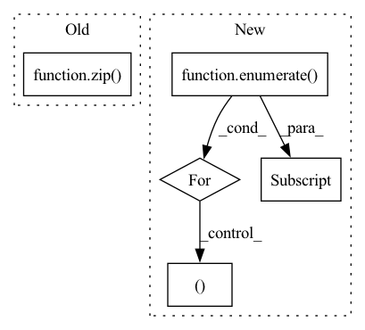

Pattern ID :13634

Before Change
def get_metric(self, reset=True):
total = 0
match = 0
for (label_first,label_second,pred_first,pred_second) in zip(
self.labels_first,self.labels_second,self.preds_first,self.preds_second
):
// print("Label:({},{}) Predict:({},{})".format(
// label_first,label_second,pred_first,pred_second
// ))
After Change
def get_metric(self, reset=True):
print("!")
for (feature_index, feature) in enumerate(self.feature_list):
start_logits,end_logits = self.start_logits_list[feature_index],self.end_logits_list[feature_index]
start_indexes = _get_best_indexes(start_logits, self.n_best_size)
end_indexes = _get_best_indexes(end_logits, self.n_best_size)
feature_null_score = start_logits[0] + end_logits[0]
In pattern: SUPERPATTERN
Frequency: 3
Non-data size: 5
Instances
Fragment ID: 45738808
Project Name: cognlp/cogktr
Commit Name: 75a2464205781e0b69dc20cf8a275ebb9b7c22af
Time: 2022-06-27
Author: 1208314139@qq.com
File Name: cogktr/core/metric/base_reading_comprehension_metric.py
M Class Name: BaseMRCMetric
N Class Name: BaseMRCMetric
M Method Name: get_metric(2)
N Method Name: get_metric(2)
M Parent Class: BaseMetric
N Parent Class: BaseMetric
M File Name: cogktr/core/metric/base_reading_comprehension_metric.py
N File Name: cogktr/core/metric/base_reading_comprehension_metric.py
M Start Line: 22
M End Line: 44
N Start Line: 31
N End Line: 38
'>
Before Change
def __call__(self, frames, masks, optical_flows):
rnd_value = random.random()
for idx, (f, m) in enumerate(zip(frames, masks)):
if rnd_value <= 0.5:
frames[idx] = np.flip(f, axis=1)
masks[idx] = np.flip(m, axis=1)
After Change
rnd_value = random.random()
if rnd_value <= 0.5:
for idx, (f, m, of) in enumerate(zip(frames, masks, optical_flows)):
frames[idx] = np.flip(f, axis=1)
masks[idx] = np.flip(m, axis=1)
optical_flows[idx] = np.flip(of, axis=1)
optical_flows[idx][..., 0] = -optical_flows[idx][..., 0]
return frames, masks, optical_flows
'>
Fragment ID: 45738813
Project Name: hzxie/rmnet
Commit Name: e7c2acab328bc517a7d31ea78d9cff93fc3bef42
Time: 2020-08-07
Author: root@haozhexie.com
File Name: utils/data_transforms.py
M Class Name: RandomFlip
N Class Name: RandomFlip
M Method Name: __call__(4)
N Method Name: __call__(4)
M Parent Class: object
N Parent Class: object
M File Name: utils/data_transforms.py
N File Name: utils/data_transforms.py
M Start Line: 115
M End Line: 123
N Start Line: 311
N End Line: 320
'>
Before Change
def query(self, keys: "np.ndarray", top_k: int, *args, **kwargs) -> Tuple["np.ndarray", "np.ndarray"]:
ret = self.query_handler.Search(keys, top_k)
idx, dist = zip(*ret)
return self.int2ext_key[np.array(idx)], np.array(dist)
After Change
def query(self, keys: "np.ndarray", top_k: int, *args, **kwargs) -> Tuple["np.ndarray", "np.ndarray"]:
idx = np.ones((keys.shape[0], top_k)) * (-1)
dist = np.ones((keys.shape[0], top_k)) * (-1)
for r_id, k in enumerate(keys):
_idx, _dist, _ = self.query_handler.Search(k, top_k)
idx[r_id, :] = self.int2ext_key[np.array(_idx)]
dist[r_id, :] = np.array(_dist)
return idx, dist
'>
Fragment ID: 45738812
Project Name: jina-ai/jina-hub
Commit Name: 6d287879dda4307a96604215d0727af560651c2f
Time: 2020-08-24
Author: Nan.Wang.28@gmail.com
File Name: indexers/vector/SptagIndexer/__init__.py
M Class Name: SptagIndexer
N Class Name: SptagIndexer
M Method Name: query(3)
N Method Name: query(3)
M Parent Class: BaseNumpyIndexer
N Parent Class: BaseNumpyIndexer
M File Name: indexers/vector/SptagIndexer/__init__.py
N File Name: indexers/vector/SptagIndexer/__init__.py
M Start Line: 51
M End Line: 53
N Start Line: 51
N End Line: 57